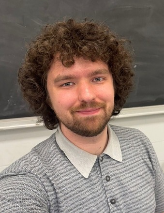

Home

Welcome!
My name is Adam Szava, I am a graduate student in applied mathematics currently studying at Toronto Metropolitan University (TMU) under the supervision of Dr. Anthony Bonato. I did my undergrad at TMU in Computer Engineering with a focus on computer architecture and SOC design. My research is currently aimed towards pursuit evasion games on graphs by studying graph embeddings.
This website is meant to be a hub for the various projects I'm working on.
- Home(that's this page): teaching activities and publications.
- Blog: mostly proofs of theorems, and other interesting things.
For more of my content you can follow me on TikTok @adam.2tor and subscribe to my Youtube Channel (Adam Szava).